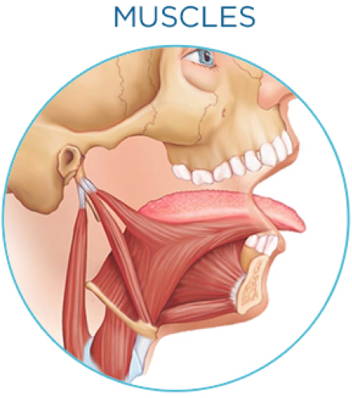

Glossodontics™ is Vlad Pastouk's author's technique aimed not only at solving problems at the physical level, but also at popularizing the model of holistic health, including the mental and emotional level. The main task of the technique is to help a person restore health, return energy to life and, ultimately, feel their own integrity and fulfillment.
The path to this goal of Glossodontics™ lies through restoring the health of the anatomical complex, which includes the tongue, perilingual tissues, muscles, jaws, skull bones, and teeth.
The return of all components of this complex to a healthy state leads to positive changes in the entire body, which affects the emotional and mental state of a person, his energy level, and therefore, his entire life.


The basis of the Glossodontics™ technique is the understanding of a person as a whole system, in which the slightest disturbance in one organ can affect not only adjacent organs and systems, but lead to disruption of the entire body.
For example, such a congenital condition as an anchor tongue (shortened frenulum of the tongue, or Tongue tie), if it is not corrected, is capable of starting a chain of changes that leads to global problems. The tongue is the main manager of the body's health. This discovery of Dr. Pastok is confirmed by his medical practice and is the basis of medical methods. The solution to the anchor tongue problem will not only help to get rid of many health problems, but will also add energy and become a guarantee of a higher quality and fuller life.

- Board Certified Naturopathic Physician (N.D.)
- Board certified in Integrative Biologic Dental Medicine (I.B.D.M.)
- Accredited Member of International Academy of Oral Medicine and Toxicology
- Diplomate of International Congress of Oral Implantologists
- Associate Fellow of American Academy of Implant Dentistry
- Fellow of Misch International Implant Institute
Diagnosis usually begins with a regular dental examination. During this appointment, the doctor should examine:
- The condition of the teeth (shape, position, condition of the enamel, wear and crowding of the teeth);
- The shape and position of the jaws (upper and lower);
- Condition of soft tissues and gums;
- Condition of the tongue (shape, color, defects, presence of abnormal plaque, bacterial growth, mobility);
- Condition of neck and face muscles;
- Condition of the temporomandibular joint (TMJ);
- Closing (occlusion) of tooth rows.
After that, based on the received data, the doctor will prescribe complex treatment.

Correction takes place at the level of each part of the Glossodontics™ dental and jaw anatomical complex and directly depends on the conclusions made during the diagnosis.
Correction of anchor tongue takes place with the help of traditional surgical or laser intervention (mainly in babies). However, the matter may not be limited to the correction of the frenulum of the tongue. It happens like this. that the surgical intervention includes the correction of the frenulum of the lips and soft tissues of the oral cavity. The recovery period after surgery depends on its complexity. In most cases, a person experiences moderate
Changes at this level begin already after the process of restoring the functions and condition of the tongue and perilingual structures has begun. However, this is usually not enough, so various methods of jaw correction are used: surgical intervention (jaw expansion), wearing orthopedic caps for several years and physiotherapeutic procedures. Selection of complex treatment is done individually for each client.
To restore the correct position of the teeth, it is important to restore the natural ratio of the lower and upper jaws. Restoring the natural state of the tongue and jaws helps the teeth to find the right place, so in most cases, the Glossodontics™ method does without braces. Correction takes place, mainly, with the help of cap. For each person, their own complex of corrective methods is selected, depending on the condition of the teeth.
Glossodontics™ does not leave the client alone with the problem after surgery and other medical manipulations. An individual recovery program is developed for each person, which goes beyond dental procedures - other specialists are involved in cooperation: physiotherapists, in particular, osteopaths, nutritionists, trainers. All together help the patient to fully restore health and get the life of his dreams. But it is worth noting here that the key role here is played by the patient himself.
The patient's role in recovery
The uniqueness of Glossodontics™ is that it offers the patient not to be a passive executor of doctors' prescriptions, but to become an active participant in the recovery process. The effectiveness of the method directly depends on the patient's willingness to work on his systemic and complex changes for a long time, to take responsibility for his health and level of vital energy, to persistently pursue the goal in close cooperation with the doctor.
Taking into account that almost all spheres of life depend on the state of health and energy level - personal relationships, parenting, career, business, social fulfillment - then by restoring the natural, close to ideal state of the body with the help of Glossodontics™, a person goes to global and extremely pleasant changes. And this is very motivating. And a high level of motivation is a necessary condition for achieving any goal. And it is important to be able to support it.
A few recommendations for maintaining motivation:
Find a motivating goal and keep it focused throughout your recovery. It can be any goal that you feel is very important. Harmonious relationship with a partner, career growth, business scaling, or simply the desire to have time and inspiration to play with children, communicate with friends or go on a dream trip - choose what is really important to you. And let it support you all the way to becoming a better version of yourself.
- For best effect, write down your motivational goal in a notebook, visualize it in detail, and then record the pleasant emotions that filled you during visualization and awareness. Positive emotions help a lot to keep the goal in focus and not to stray from the path.
- Keep a diary of positive changes and record your small steps towards the dream state. The ability to see all your achievements is a very useful skill that supports a high level of motivation.
- Stay in touch with your doctors and learn all the secrets of your body. Such self-awareness and attention is very inspiring.
- Seek support from loved ones. Their empathy is an important component of your motivation. Perhaps family and friends will join you in exercising and following a diet, or perhaps they will simply encourage and believe in you - any kind of support will help.